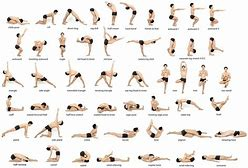
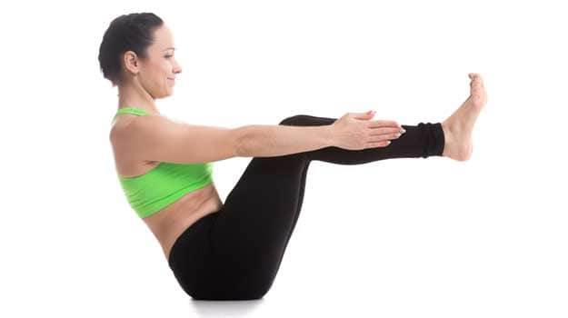

yogga poses

tightens the abdominal muscles and strengthens shoulders and upper back. It leaves the practitioner with a sense of stability. Lie back on the mat with your feet together and hands by your side. Take a deep breath and while exhaling gently lift your chest and feet off the ground. Stretch your hands in the direction of your feet. Your eyes, fingers and toes should be in one line. Hold till you feel some tension in your navel area as your abdominal muscles begin to contract. As you exhale, come back to the ground and relax.
naukasana pose
NEXT